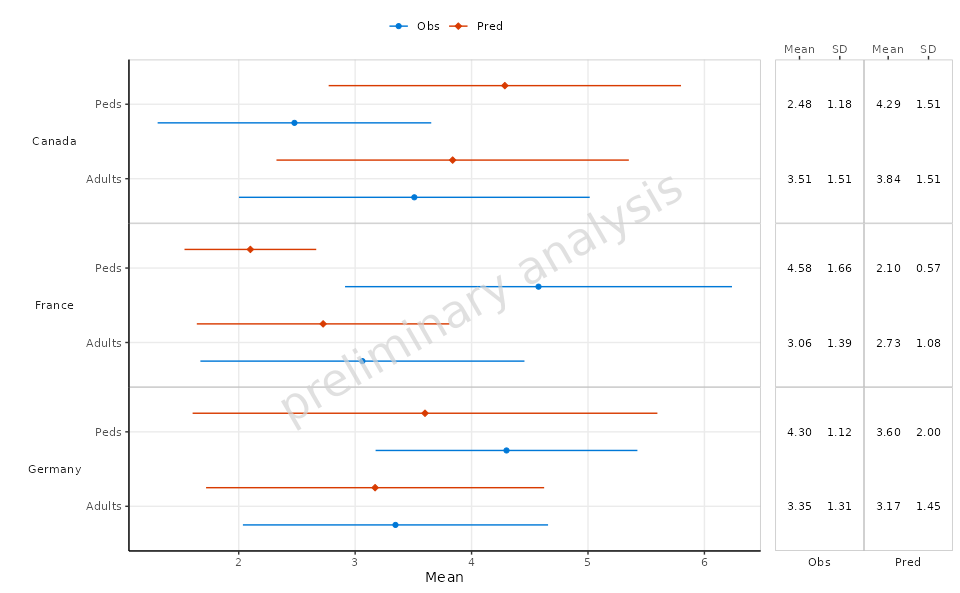
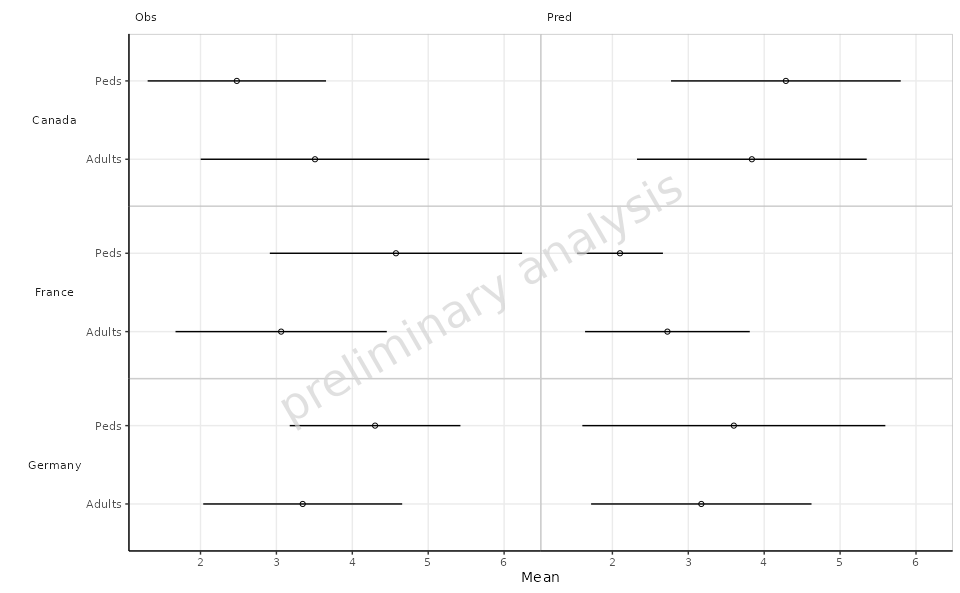

Forestplots
forest-plots.Rmd1. Introduction
This vignette documents and illustrates workflows for producing
forest plots using the function plotForest from the
ospsuite.plots package. Forest plots are a useful way to
visualize the results of multiple studies or datasets, showing estimates
of effect sizes along with their confidence intervals.
1.1 Setup
This vignette uses the ospsuite.plots and
tidyr libraries. We will use the default settings of
ospsuite.plots (see
vignette("ospsuite.plots", package = "ospsuite.plots")) but
will adjust the legend position for better visibility.
options(rmarkdown.html_vignette.check_title = FALSE)
# Set watermark option required for ospsuite.plots functionality
options(ospsuite.plots.watermark_enabled = TRUE)
library(ospsuite.plots)
#> Loading required package: ggplot2
library(tidyr)
library(data.table)
# Set Defaults
oldDefaults <- ospsuite.plots::setDefaults()
# Place default legend position above the plot
theme_update(legend.position = "top")
theme_update(legend.direction = "horizontal")
theme_update(legend.title = element_blank())1.2 Example Data
This vignette uses the following datasets:
- Data Set 1: A simulated dataset containing various covariates such as ID, Country, Age, AgeBin, Observations, and Predictions. The dataset will be filtered and reshaped to prepare it for plotting.
histData <- exampleDataCovariates |>
dplyr::filter(SetID == "DataSet1") |>
dplyr::select(c("ID", "Country", "Age", "AgeBin", "Obs", "Pred")) |>
melt(
id.vars = c("ID", "Country", "Age", "AgeBin"),
value.name = "value",
variable.name = "DataType"
)
# Prepare plot data by calculating mean and standard deviation
plotData <- histData[, .(
Mean = mean(value),
SD = sd(value)
),
by = c("Country", "AgeBin", "DataType")
]2. Generating Forest Plots
2.1 Basic Example
In this example, we will create a basic forest plot using the mean
and standard deviation of the data, faceted by Country. The
plot will display the mean on the x-axis and the AgeBin on
the y-axis.
plotObject <-
plotForest(
plotData = plotData,
mapping = aes(x = Mean, error = SD, y = AgeBin, groupby = DataType),
xLabel = "Mean",
yFacetColumns = "Country",
tableColumns = c("Mean", "SD"),
tableLabels = c("Mean", "SD")
)
print(plotObject)
2.2 Example Without Table
In this example, we will create a forest plot similar to the previous one but without including a summary table below the plot.
plotObject <-
plotForest(
plotData = plotData,
mapping = aes(x = Mean, error = SD, y = AgeBin, groupby = DataType),
xLabel = "Mean",
yFacetColumns = "Country",
tableColumns = c("Mean", "SD"),
tableLabels = c("Mean", "SD"),
withTable = FALSE
)
print(plotObject)
2.3 Faceting by Data Type
In this example, we will facet the plot by DataType
while still using Country for the y-axis. This allows for a
more detailed view of the data categorized by both Country
and DataType.
plotObject <-
plotForest(
plotData = plotData,
mapping = aes(x = Mean, error = SD, y = AgeBin),
xLabel = "Mean",
yFacetColumns = "Country",
xFacetColumn = "DataType",
tableColumns = c("Mean", "SD"),
tableLabels = c("Mean", "SD"),
withTable = FALSE
)
print(plotObject)